Hier sind die 120 neuesten von 371 Materialien. Alle im Material-Finder ansehen

Lesespaziergang Nikolausabend: Stiefel, Sterne, Plätzchenduft – 8 Stationen in 3 Lesestufen mit Hörfassung (Klasse 1–2, DaZ)

Lesespaziergang Tiere im Winter: Pit, der Igel, sucht ein Bett – 8 Stationen in 3 Lesestufen mit Hörfassung (Klasse 1–2, DaZ)

Lesespaziergang Laternenzeit: Linas Laterne – 8 Stationen in 3 Lesestufen mit Hörfassung (Klasse 1–2, DaZ)

St.-Martins-Laterne aus einem Blatt – falten, einschneiden, rollen, mit Martinsgeschichte, 3-fach differenziert (Klasse 2/3)

Herbst-Klappkarte Eichhörnchen – Figurenkarte basteln mit Sachtext, 3-fach differenziert (Tiere im Herbst, Klasse 2/3)

Flatter-Fledermaus am Stab – bewegliche Bastelfigur mit Sachtext, 3-fach differenziert (Halloween/Herbst, Klasse 2/3)

Halloween-Ziehkarten – Präpositionen sichtbar machen: über, vor, neben, auf, 3-fach differenziert (Klasse 1/2, DaZ)

Spinnen-Rätsel-Faltkarte – Halloween-Rätsel lesen und schreiben, Pop-up-Spinne, 3-fach differenziert (Klasse 2/3)

Mein Grusel-Meter – Halloween-Drehkarte basteln, Adjektive steigern und vergleichen, 3-fach differenziert (Klasse 2/3)

Halloween-Hüpffiguren – 6 Bastelvorlagen mit Federkugel, Steckbrief und Geschichte, 3-fach differenziert (Klasse 1/2)

Körperhaltung Lückentext mit Wortspeicher Hörverstehen und Suchsel

Kirchenjahr Lückentext mit Wortspeicher Hörverstehen und Suchsel

Gottesdienst Lückentext mit Wortspeicher Hörverstehen und Suchsel
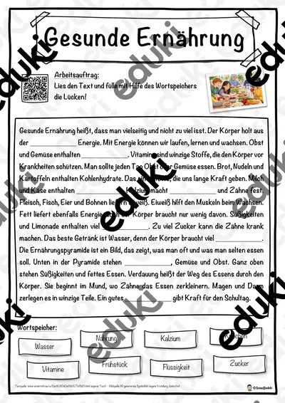
Gesunde Ernährung Lückentext mit Wortspeicher Hörverstehen und Suchsel

Felsformation Lückentext mit Wortspeicher Hörverstehen und Suchsel

Farbwirkung Lückentext mit Wortspeicher Hörverstehen und Suchsel

Die Farbe Rot Lückentext mit Wortspeicher Hörverstehen und Suchsel

Die Farbe Blau Lückentext mit Wortspeicher Hörverstehen und Suchsel
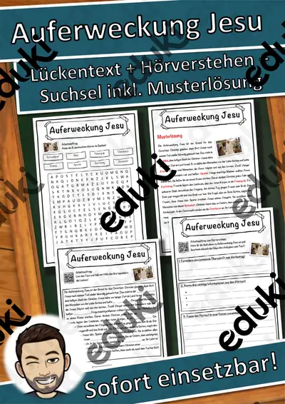
Auferweckung Jesu Lückentext mit Wortspeicher Hörverstehen und Suchsel

Abendrot Lückentext mit Wortspeicher Hörverstehen und Suchsel

DaZ-Wortschatz Materialpaket: 6 Wortfelder differenziert A1/A2/B1 – Hörszenen (QR), Lückentexte, Rollenspiele, Sprechkarten
DaZ-Wortschatz Körper und Gesundheit – differenziert A1/A2/B1: Hörszene (QR), Lückentexte, Rollenspiel
DaZ-Wortschatz Unterwegs in der Stadt – differenziert A1/A2/B1: Hörszene (QR), Lückentexte, Rollenspiel
DaZ-Wortschatz Mein Zuhause – differenziert A1/A2/B1: Hörszene (QR), Lückentexte, Rollenspiel

DaZ-Wortschatz Kleidung und Wetter – differenziert A1/A2/B1: Hörszene (QR), Lückentexte, Rollenspiel

DaZ-Wortschatz Essen und Trinken – differenziert A1/A2/B1: Hörszene (QR), Lückentexte, Rollenspiel
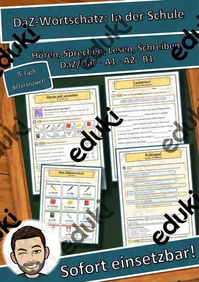
DaZ-Wortschatz In der Schule – differenziert A1/A2/B1: Hörszene (QR), Lückentexte, Rollenspiel

Himmel und Hölle: Im Wald – Gratis-Probe

Himmel und Hölle: In der Stadt – Gratis-Probe
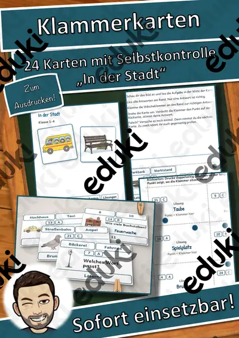
Klammerkarten: In der Stadt – Gratis-Probe

Himmel und Hölle: Süßigkeiten – Gratis-Probe

Klammerkarten: Süßigkeiten – Gratis-Probe

Himmel und Hölle: Gefühle – Gratis-Probe
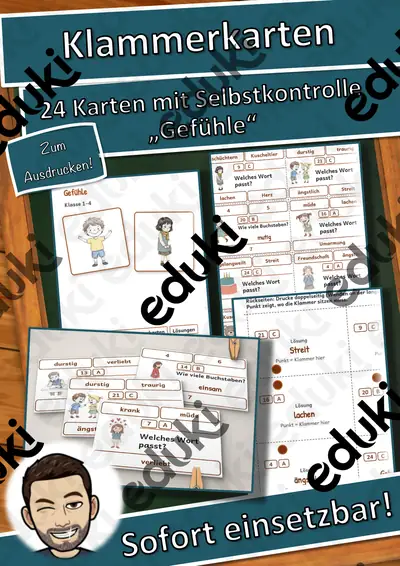
Klammerkarten: Gefühle – Gratis-Probe
Himmel und Hölle: Musik und Instrumente – Gratis-Probe
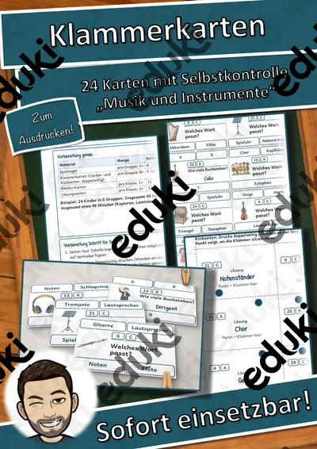
Klammerkarten: Musik und Instrumente – Gratis-Probe

Himmel und Hölle: Hygiene und Körperpflege – Gratis-Probe

Klammerkarten: Hygiene und Körperpflege – Gratis-Probe

Himmel und Hölle: Tagesablauf – Gratis-Probe

Klammerkarten: Tagesablauf – Gratis-Probe
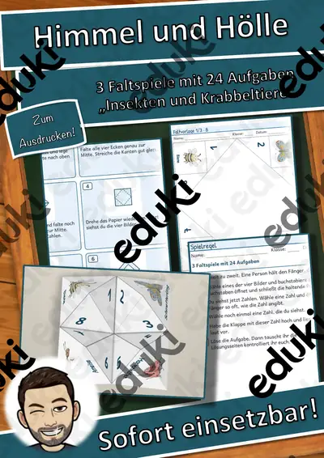
Himmel und Hölle: Insekten und Krabbeltiere – Gratis-Probe
Klammerkarten: Insekten und Krabbeltiere – Gratis-Probe

Klammerkarten: Im Wald – Gratis-Probe
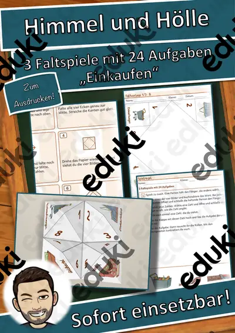
Himmel und Hölle: Einkaufen – Gratis-Probe
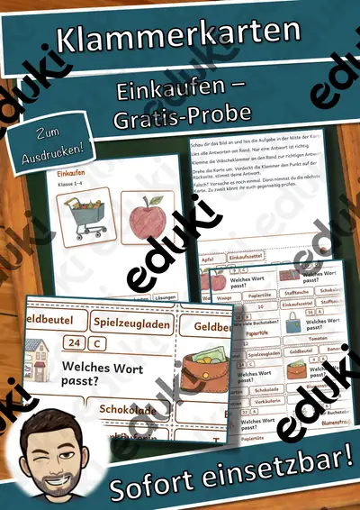
Klammerkarten: Einkaufen – Gratis-Probe

Himmel und Hölle: In der Stadt – Himmel und Hölle – Klasse 1–4

Himmel und Hölle: Süßigkeiten – Himmel und Hölle – Klasse 1–4

Klammerkarten: Süßigkeiten – Klammerkarten – Klasse 1–4

Himmel und Hölle: Gefühle – Himmel und Hölle – Klasse 1–4

Klammerkarten: Gefühle – Klammerkarten – Klasse 1–4

Himmel und Hölle: Musik und Instrumente – Himmel und Hölle – Klasse 1–4

Klammerkarten: Musik und Instrumente – Klammerkarten – Klasse 1–4

Himmel und Hölle: Hygiene und Körperpflege – Himmel und Hölle – Klasse 1–4
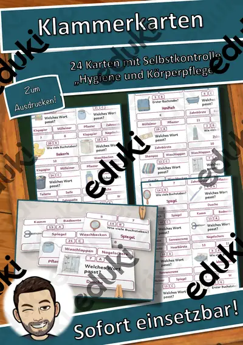
Klammerkarten: Hygiene und Körperpflege – Klammerkarten – Klasse 1–4

Himmel und Hölle: Tagesablauf – Himmel und Hölle – Klasse 1–4
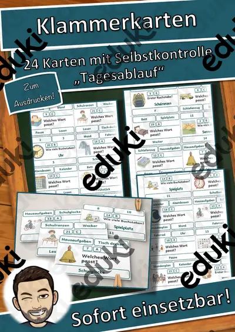
Klammerkarten: Tagesablauf – Klammerkarten – Klasse 1–4

Himmel und Hölle: Insekten und Krabbeltiere – Himmel und Hölle – Klasse 1–4

Geschenkbox-Karte mit Tasche: Druckvorlage Weihnachten mit 4 Figuren für Gutscheine (Klasse 1–4)

Klammerkarten: Insekten und Krabbeltiere – Klammerkarten – Klasse 1–4

Himmel und Hölle: Im Wald – Himmel und Hölle – Klasse 1–4

Klammerkarten: Im Wald – Klammerkarten – Klasse 1–4

Himmel und Hölle: Einkaufen – Himmel und Hölle – Klasse 1–4

Klammerkarten: Einkaufen – Klammerkarten – Klasse 1–4

Himmel und Hölle: Im Restaurant – Himmel und Hölle – Klasse 1–4

Klammerkarten: Im Restaurant – Klammerkarten – Klasse 1–4

Himmel und Hölle: Familie – Himmel und Hölle – Klasse 1–4

Klammerkarten: Familie – Klammerkarten – Klasse 1–4

Himmel und Hölle: Wilde Tiere – Himmel und Hölle – Klasse 1–4

Klammerkarten: Wilde Tiere – Klammerkarten – Klasse 1–4

Himmel und Hölle: Fahrzeuge – Himmel und Hölle – Klasse 1–4

Klammerkarten: Fahrzeuge – Klammerkarten – Klasse 1–4
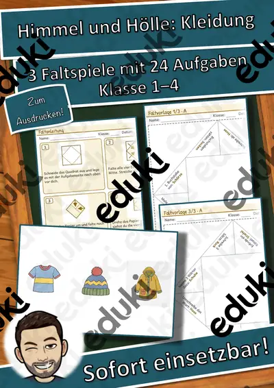
Himmel und Hölle: Kleidung – Himmel und Hölle – Klasse 1–4

Klammerkarten: Kleidung – Klammerkarten – Klasse 1–4

Himmel und Hölle: Im Zoo – Himmel und Hölle – Klasse 1–4

Klammerkarten: Im Zoo – Klammerkarten – Klasse 1–4

Himmel und Hölle: Ostern – Himmel und Hölle – Klasse 1–4

Klammerkarten: Ostern – Klammerkarten – Klasse 1–4
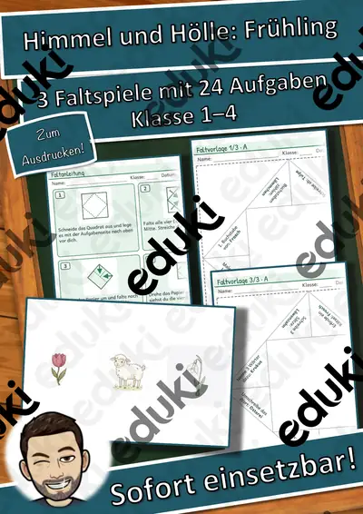
Himmel und Hölle: Frühling – Himmel und Hölle – Klasse 1–4
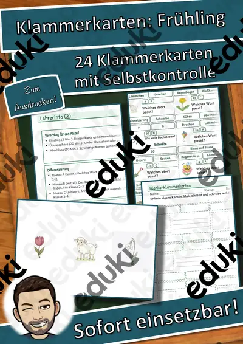
Klammerkarten: Frühling – Klammerkarten – Klasse 1–4

Himmel und Hölle: Sommer – Himmel und Hölle – Klasse 1–4

Himmel und Hölle: Wetter – Himmel und Hölle – Klasse 1–4

Klammerkarten: Wetter – Klammerkarten – Klasse 1–4

Himmel und Hölle: Bienen – Himmel und Hölle – Klasse 1–4
Klammerkarten: Bienen – Klammerkarten – Klasse 1–4

Himmel und Hölle: Kochen und Backen – Himmel und Hölle – Klasse 1–4

Klammerkarten: Kochen und Backen – Klammerkarten – Klasse 1–4

Klammerkarten: Obst und Gemüse – Klammerkarten – Klasse 1–4

Himmel und Hölle: Im Garten – Himmel und Hölle – Klasse 1–4

Klammerkarten: Im Garten – Klammerkarten – Klasse 1–4
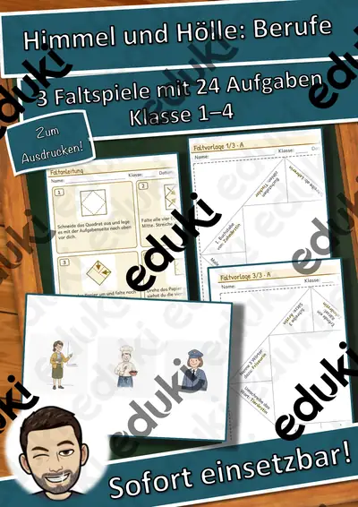
Himmel und Hölle: Berufe – Himmel und Hölle – Klasse 1–4

Klammerkarten: Berufe – Klammerkarten – Klasse 1–4
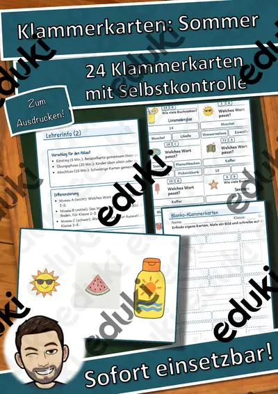
Klammerkarten: Sommer – Klammerkarten – Klasse 1–4

Himmel und Hölle: Obst und Gemüse – Himmel und Hölle – Klasse 1–4

Escape-Room Schreiben in Klasse 2 – Deutsch Klasse 2 Grundschule: 6 Stationen, 2 Schlösser

Escape-Room Lesen und Medien verstehen – Deutsch Klasse 2 Grundschule: 6 Stationen, 2 Schlösser

Geschenkkarten und Anhänger Weihnachten: 4 Klappkarten, 8 Anhänger und Aufkleb-Figuren (Klasse 1–4)
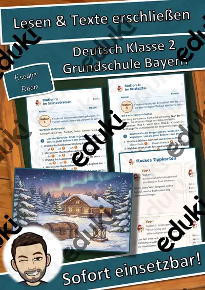
Escape-Room Lesen & Texte erschließen – Deutsch Klasse 2 Grundschule: 6 Stationen, 2 Schlösser

Escape-Room Sprachdetektive – Deutsch Klasse 2 Grundschule: 6 Stationen, 2 Schlösser
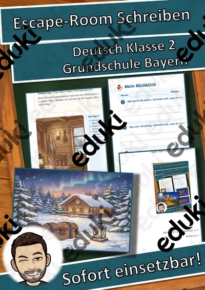
Escape-Room Schreiben – Deutsch Klasse 2 Grundschule: 6 Stationen, 2 Schlösser

Escape-Room Sprechen und Zuhören – Deutsch Klasse 2 Grundschule: 6 Stationen, 2 Schlösser
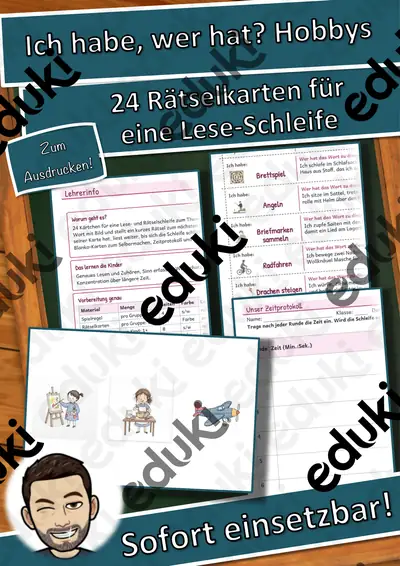
Ich habe, wer hat? Hobbys – Lese-Schleifen – Klasse 1–4
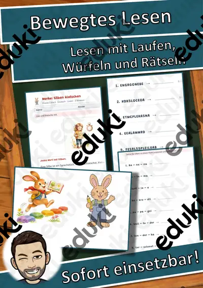
Bewegtes Lesen: Lesen mit Laufen, Würfeln und Rätseln

Wortgitter-Suchsel: Ritter und Burg – Wortgitter – Klasse 1–4
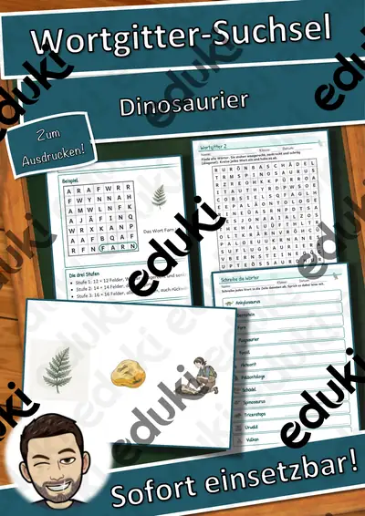
Wortgitter-Suchsel: Dinosaurier – Wortgitter – Klasse 1–4

Wortgitter-Suchsel: Weltall – Wortgitter – Klasse 1–4
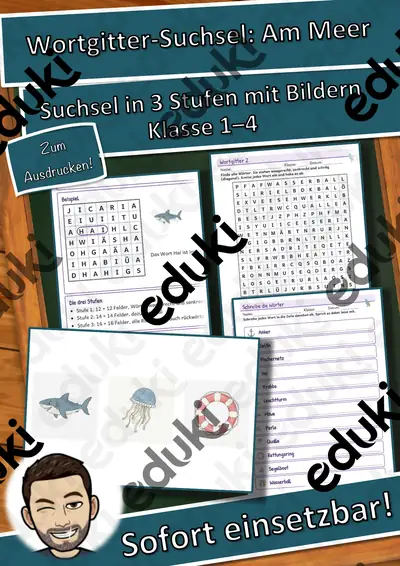
Wortgitter-Suchsel: Am Meer – Wortgitter – Klasse 1–4
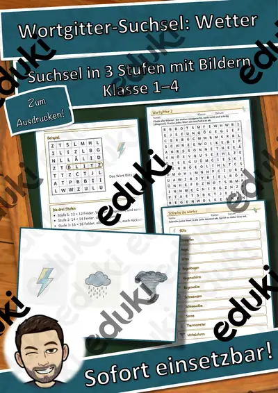
Wortgitter-Suchsel: Wetter – Wortgitter – Klasse 1–4
Wortgitter-Suchsel: Fahrzeuge – Wortgitter – Klasse 1–4
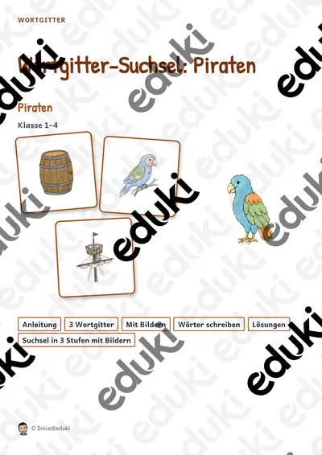
Wortgitter-Suchsel: Piraten – Wortgitter – Klasse 1–4
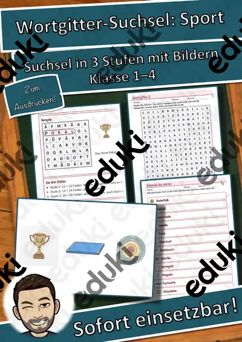
Wortgitter-Suchsel: Sport – Wortgitter – Klasse 1–4
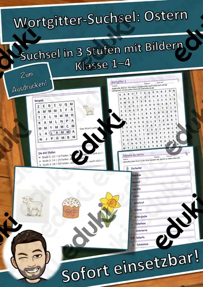
Wortgitter-Suchsel: Ostern – Wortgitter – Klasse 1–4
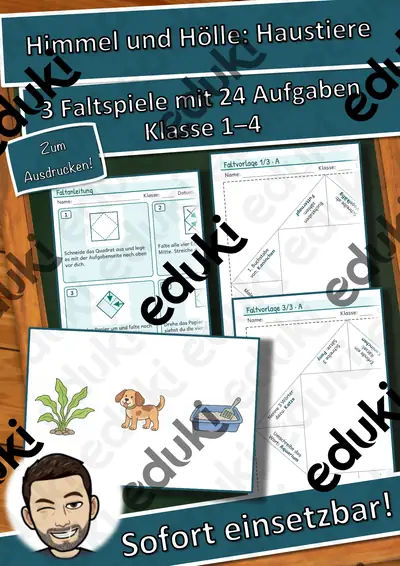
Himmel und Hölle: Haustiere – Himmel und Hölle – Klasse 1–4
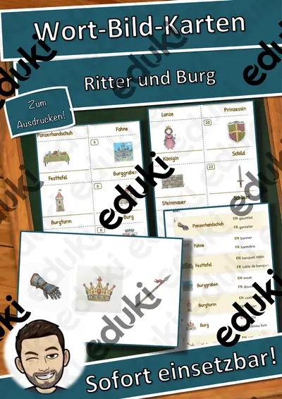
Wort-Bild-Karten: Ritter und Burg – Wort-Bild-Karten – Klasse 1–4
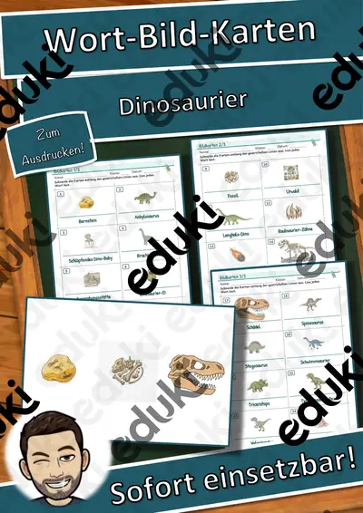
Wort-Bild-Karten: Dinosaurier – Wort-Bild-Karten – Klasse 1–4
Lesen, Malen und Kleben: Familie – Lesen und Malen – Klasse 1–4

Wort-Bild-Karten: Weltall – Wort-Bild-Karten – Klasse 1–4
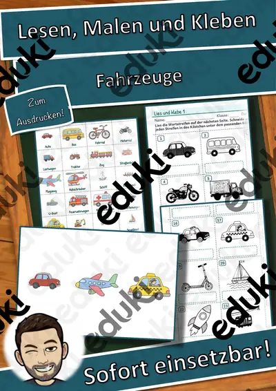
Lesen, Malen und Kleben: Fahrzeuge – Lesen und Malen – Klasse 1–4
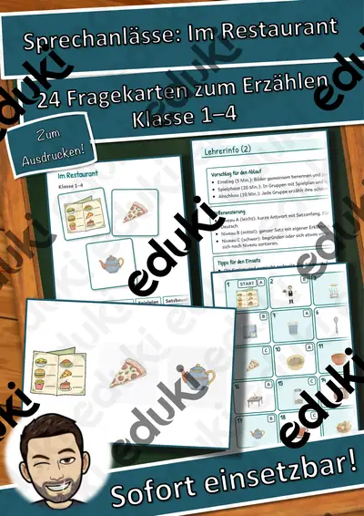
Sprechanlässe: Im Restaurant – Sprechanlässe – Klasse 1–4
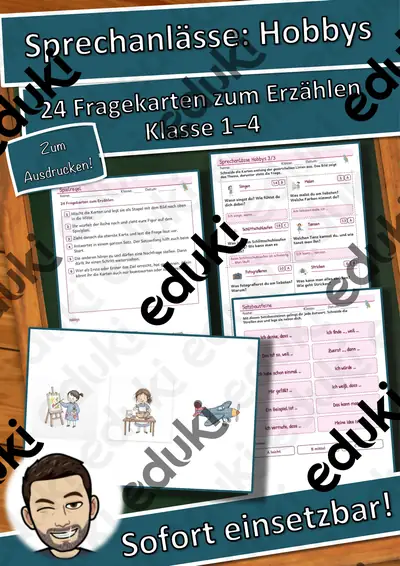
Sprechanlässe: Hobbys – Sprechanlässe – Klasse 1–4
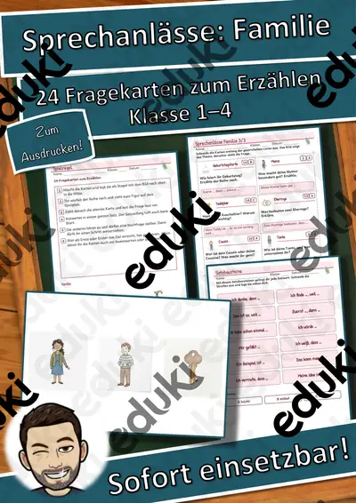
Sprechanlässe: Familie – Sprechanlässe – Klasse 1–4
Keine Materialien gefunden – versuch einen anderen Suchbegriff oder Filter.